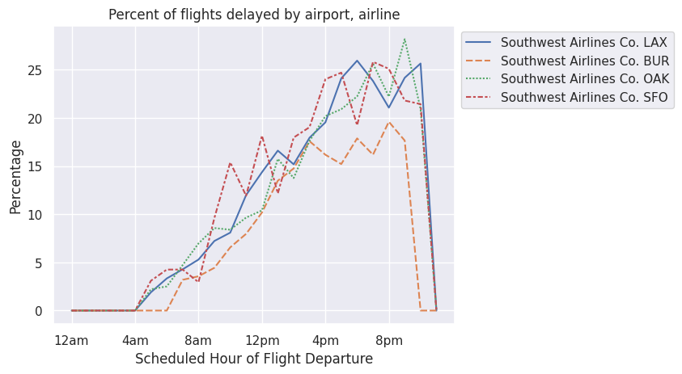

Everything to Know About Flight Delays (no code)
As a teenager, when booking flights, my mom always insisted that we book the earliest flight possible. It made no sense to me. “But we’ll have wasted a day traveling anyway, Mom! Why should we wake up super early and be tired just to get to the hotel and do nothing? Shouldn’t we book a flight for later in the day?” Years later, I saw her have the same argument with my sister. Having studied data science at UC Berkeley, I realized that this question was answerable with more than just anecdotes about delays.
That’s why I decided to study flight delays in-depth and write an article summarizing my conclusions. This article analyzes post-Covid flight information up to February 2023 (the latest available as of today) while sparing the reader the details of data processing.
Downloading the data
The best resource to investigate the regularity of flights within the US is the Bureau of Transportation Statistics. They have a website that hosts the data, which is publicly available. The data is available by month, meaning that I had to manually request data for the 14 months I was interested in.
I automated data downloading using Python (a common programming language) to request the data in batches directly from the government server. Then, I compiled the data into a spreadsheet with the data processing tool pandas and did some additional processing to make later operations easier.
Plot of flight delays vs departure time
Let’s take a precursory view of flight delays in the aggregate and see how they correlate with departure time.
We see that delays overall are densest between 2pm and 6pm, but the most common delay is less than 10 minutes and occurs between 10am and 12pm. Given that the most common delay is minimal, I wanted to take a better look. We’ll look at significant delays, which I will define to be greater than or equal to 30 minutes in length.
Plot of significant and nonsignificant delays vs departure

From the chart, we see that both slight and significant delays increase as the day goes on. Significant delays start low at 6am and steadily increase, peaking at 6pm, while slight delays seem to plateau around 10am.
Delays by airline
Now, let’s look at delays by airline. I merged wholly-owned subsidiaries with their parent company (a complete list of wholly-owned subsidiary airlines in North America can be found on Wikipedia), as people do not often see their brand nor purchase from them. Some airlines, such as Republic Airline, are regional airlines that fly under multiple airline names; our data does not represent whose banner they fly under for a given flight, making it impossible for us to merge their flights with their contracted carrier.

Regardless of airline, the chance of significant delay is lowest in the early hours of the morning, regardless of airline. From there, the probability of delay steadily increases and peaks in the evening. Then there is a dip around midnight, with delays skyrocketing in the wee hours of the morning. Many of these flights are red-eyes from Alaska and Puerto Rico that occur at the end of an airline’s work day. Flying at the end of the work day increases the chance of delay since planes fly multiple flights in a day, and any delay in an earlier flight can mess up the traffic control schedule for all later flights. Additionally, if delayed for too long, crew duty hours can also exceed the limit. This happened in Southwest’s meltdown last year, where Southwest had insufficient replacement crews and misallocation of planes, leading to mass flight cancellations.
The budget airlines (Frontier, Spirit, Southwest, and JetBlue) all have higher rates of delay throughout the day according to this dataset, with the exception of Southwest, which has a delay rate comparable with the non-budget airlines in the morning. However, by 12pm, Southwest’s significant delay rate grows past that of the non-budget airlines and joins its budget peers by 4 or 5 pm.
By the numbers:
| Airline | % Flights Significantly Delayed |
|---|---|
| JetBlue Airways | 22.078514 |
| Frontier Airlines Inc. | 21.896298 |
| Allegiant Air | 18.991785 |
| Spirit Air Lines | 16.958591 |
| Southwest Airlines Co. | 15.292280 |
| American Airlines Inc. | 14.529106 |
| Mesa Airlines Inc. | 13.838768 |
| United Air Lines Inc. | 12.994220 |
| Hawaiian Airlines Inc. | 11.101448 |
| PSA Airlines Inc. | 11.007379 |
| Delta Air Lines Inc. | 10.671968 |
| SkyWest Airlines Inc. | 10.629637 |
| Alaska Airlines Inc. | 10.458504 |
| Republic Airline | 10.361243 |
| Endeavor Air Inc. | 9.843149 |
| Envoy Air | 9.762695 |
| Horizon Air | 8.873647 |
In sum, to minimize the chance of delay, it’s best to choose a non-budget airline and depart as early as possible to avoid a significant delay. Your chances of making a connecting flight, getting to your destination at a reasonable hour, and enjoying a warm, healthy dinner all increase if you leave earlier in the day. It seems like my mom was right after all.
Applications: LAX and BUR, and SFO and OAK
Since starting college, I’ve traveled quite regularly on planes between my hometown in Southern California and my university in the San Francisco Bay Area. I was drawn to this topic to get a better sense of which airline and airport combination offered me the fewest overall delays. As a college student with a constrained budget, I often take Southwest to and from school due to its cheap fares and customer service..
Southern California common wisdom dictates that one should fly out of Burbank (BUR) whenever possible to avoid the hassle of traveling to and out of Los Angeles (LAX.. Coming to the Bay Area for college, I expected Oakland (OAK) and San Francisco (SFO) to share a similar dynamic. However, I was surprised to hear that some of my friends preferred SFO over OAK. In this section, we will determine whether SFO is better than OAK and BUR is better than LAX.
I follow a similar approach as before but select only flight records that contain our desired airports.

We see that BUR has fewer delays than LAX, OAK, and SFO. Burbank is better than LAX, but Oakland and SFO are about the same. Maybe my friends’ preference for SFO compared to OAK stems from something else, but clearly delays don’t play a major role in that decision.